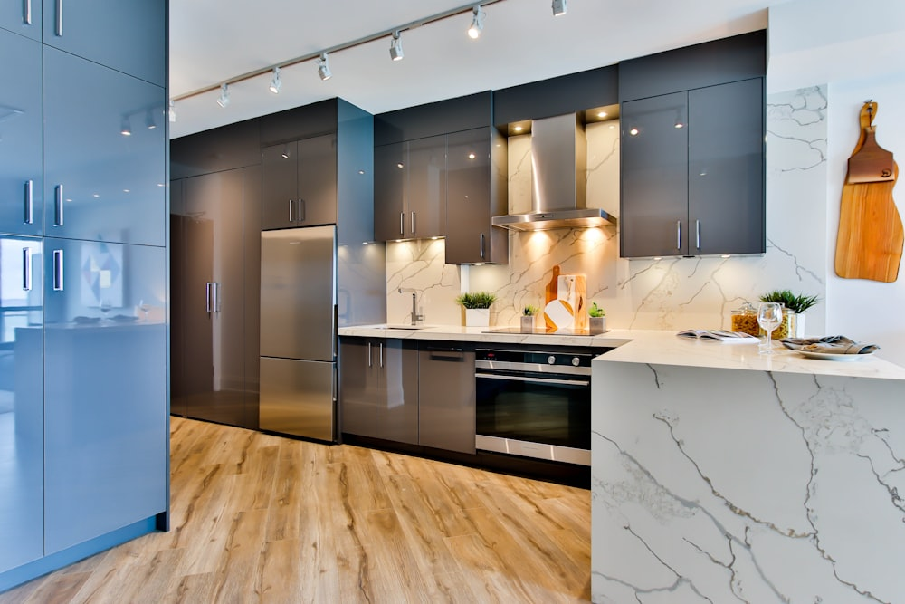

When your refrigerator stops cooling, temperature fluctuations risk spoiling perishable food. Our San Jose appliance technicians quickly identify whether the culprit is a failed start relay, defective evaporator fan, choked coils, or defrost control failure.


Refrigerators run 24 hours a day, making them the most heavily taxed appliance in your home. Even small components, like a worn defrost thermistor or a buzzing inverter board, can rapidly cause interior temperatures to climb above the safe 40°F threshold.
We service all styles of residential refrigerators across San Jose, including French-door models, side-by-side configurations, bottom-freezer units, and traditional top-freezers. Our focus is diagnosing the real issue rather than guessing.
If your refrigerator exhibits any of these symptoms, prompt service can prevent total cooling loss.
Failed compressor start device, defective temperature control thermostat, or heavy dust clogging the lower condenser coils.
Defrost heater burnout, bimetal thermostat failure, or defrost timer malfunction causing ice buildup over the evaporator fins.
Compressor struggling to start against high head pressure, worn motor bearings, or vibrating condenser fan blades.
Blocked defrost drain trough or frozen drain tube causing meltwater to overflow into the bottom of the fresh-food compartment.
Defective dual water inlet valve, jammed ejector arm, broken thermistor, or low water supply pressure.
Faulty motorized air damper control or failed evaporator fan motor failing to circulate chilled air into the fresh food cavity.

When our technician arrives at your San Jose home, you receive an exhaustive technical assessment:
Check that the power cord is securely plugged in, verify the circuit breaker hasn't tripped, and note down your refrigerator's model number (usually found on an interior wall label).
If cooling has slowed, keep the refrigerator doors closed as much as possible to preserve the internal temperature until our technician evaluates the machine.
We service homes throughout San Jose, including Willow Glen, Blossom Valley, Rose Garden, Almaden, and West San Jose with flexible scheduling windows.
Call our dispatch desk directly at (833) 327-1076. We are ready to answer questions and schedule your in-home appointment.